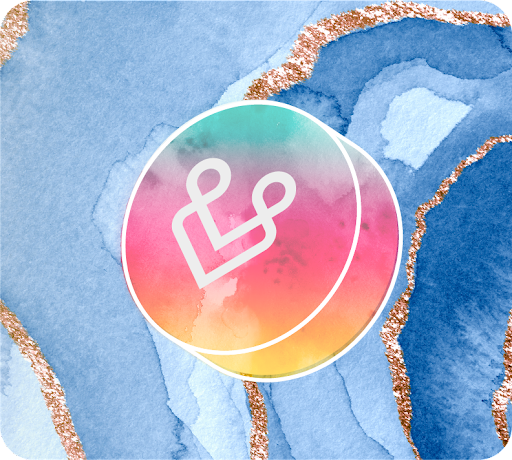
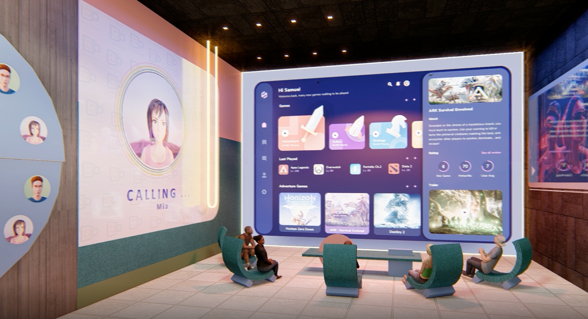
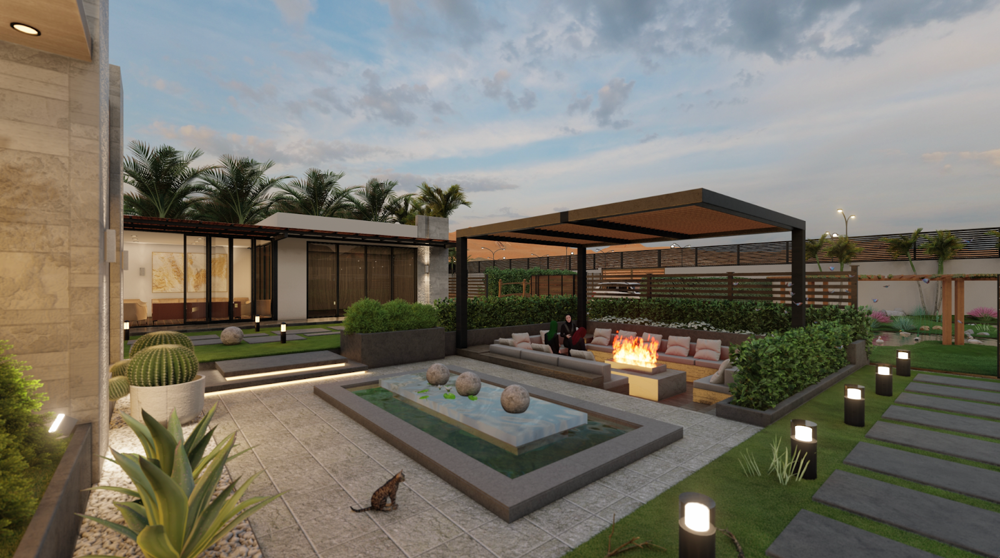

OurVerse

see some examples how virtual worlds can be created with OurVerse
State of the art rendering and experiences beyond e-commerce and marketing. A metaverse built by and for the people using it, with worthwhile capabilities that enhance your virtual experience.
A high quality metaverse experience cannot be delivered from far away datacenter, just like a very high resolution and action intense games cannot be delivered by central large datacenters. Local gaming consoles are top of the market and present the best gaming experience to gamers. Gaming consoles are local to gamers for optimum performance and experience. For immersive metaverse high quality and responsive metaverse experiences you need local data compute and storage and GPU rendering.
Local GPU Rendering
OurVerse’s proximity by ThreeFold’s edge computing allows rendering proximity (low latency) and speed unmatched in the industry.
This allows streaming and graphic rendering at super high speeds with pixel perfect imagery, making OurVerse the first metaverse to achieve this status.
Even on mobile devices, GPU rendering shows quality previously not available for such experiences.
Metaverse is making remote local
The metaverse allows to create physical world experiences and in general things we are used to available in the digital space. We do so much in our personal and professional lifes online that is replaces a lot of physcial times being with others. In order to make that digital online life more like our day to day physical life. Email, Todo lists, video conferences they can all be redone and redesigned into somthing that is more personal and provides everyone with more detailed input and feedback about the situation we are in.
Example experiences
Personal ToDo list
The metaverse presents real work experiences in a new an innovative way. For example a wall with ToDo list functionality will present different personal ToDo lists for any that is looking at the same wall. Also, when two people want to share their todo lists they can make their private todo list viewable for other digital avatars in the digital space.

Meeting and presentation capabilities
Covid-19 has put digital meetings in everyones agenda. From business meetings to school classes, we all have been using industry standard video conferencing tools. This is a step forward from having audio conferences only, but a lot can be improved if all participants are part of and in a virtual space where everyone has 3D virtual representation and experiences the same (virtual) environment as one would in the real world in a conference room.
This is make possible in the metaverse and proximity of the virtual world rendering makes the experiences high quality and latency free. 
Internal and outside work, meet and greet spaces
Larger rooms allow for digital roaming and impromptu meetings. Just like working in an office building (or any other physical setting) having a continuous virtual presence in a virtual world allows you to have impromptu conversations, meeting, brains storming sessions or just that little chat near the coffee machine in the cafeteria.

Remote working has taken away these little distractions and creative moments and a metaverse is able to bring this back to the remote working / social locations.
